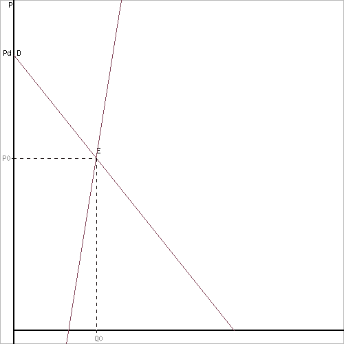
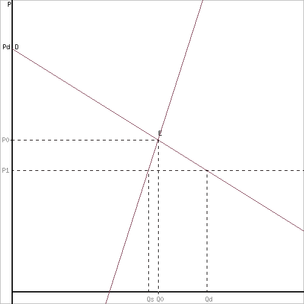
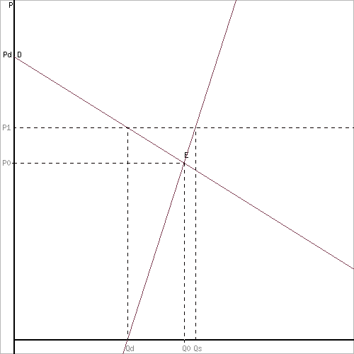

Равновесная цена это цена, при которой объем спроса на рынке равен объему предложения. Выражается как Qd(P) = Qs(P). Назначение сервиса. Данный онлайн-калькулятор направлен на решение и проверку следующих задач:
- Параметры равновесия данного рынка (определение равновесной цены и равновесного объема);
- Коэффициенты прямой эластичности спроса и предложения в точке равновесия;
- Излишки потребителя и продавца, чистый общественный выигрыш;
- Правительство ввело потоварную дотацию с каждой проданной единицы товара в размере N руб.;
- Сумма дотации, направленную из государственного бюджета;
- Правительство ввело потоварный налог с каждой проданной единицы товара в размере N руб.;
- Описать последствия принятия государством решения о фиксации цены на N выше (ниже) равновесной.
Введите уравнения спроса и предложения
Qd - функция спроса, Qs - функция предложения
Пример: Функция спроса на данный товар Qd=200–5P, функция предложения Qs=50+P.
- Определить равновесную цену и равновесный объем продаж.
- Предположим, что администрация города решила установить фиксированную цену на уровне: а) 20 ден. ед. за штуку, б) 30 ден. ед. за штуку.
- Проанализировать полученные результаты. Как это повлияет на поведение потребителей и производителей? Решение представить графически и аналитически.
Решение.
Найдем параметры равновесия на рынке.
Функция спроса: Qd = 200 -5P.
Функция предложения: Qs = 50 + P.
1. Параметры равновесия данного рынка.
При равновесии Qd = Qs
200 -5P = 50 + P
6P = 150
P равн = 25 руб. - равновесная цена.
Q равн = 75 ед. - равновесный объем.
W = P•Q = 1875 руб. - доход продавца.

Потребительский излишек показывает, насколько лучше в среднем живут отдельные люди.
Излишек потребителя (или выигрыш) – это разность между
максимальной
ценой, которую он готов
отдать за товар, и той, которую он действительно платит. Если сложить излишки всех
потребителей, которые
приобретают данный товар, то мы получим размер совокупного излишка.
Излишек производителя (выигрыш) – эта разность между рыночной ценой и той
минимальной ценой,
за которую производители готовы продать свой товар.
Излишек продавца (PsP0E): (Pравн - Ps)Qравн
/ 2 = (25 -
(-50))75 / 2 = 2812.5 руб.
Излишек покупателя (PdP0E): (Pd - Pравн)Qравн
/ 2 = (40
- 25)75 /2 = 562.5 руб.
Чистый общественный выигрыш: 2812.5 + 562.5 = 3375
Знание излишков широко используется на практике, например, при распределении
налогового бремени или
субсидировании отраслей, фирм.
2) Предположим, что администрация города решила установить фиксированную цену на
уровне 20 ден. ед. за
штуку
Pфикс = 20 руб.
Объем спроса: Qd = 200 -5 • 20 = 100.
Объем предложения: Qs = 50 + 1 • 20 = 70.
После фиксации цены, объем спроса уменьшился на 25 шт. (75 - 100), а дефицит
производителей
уменьшился на 5 шт. (70 - 75). На рынке дефицит товаров в размере 30 шт. (70 - 100).

Предположим, что администрация города решила установить фиксированную цену на
уровне 30 ден. ед. за
штуку.
Pфикс = 30 руб.
Объем спроса: Qd = 200 -5 • 30 = 50.
Объем предложения: Qs = 50 + 1 • 30 = 80.
После фиксации цены, объем спроса увеличился на 25 шт. (75 - 50), а излишек
производителей
увеличился на 5 шт. (80 - 75). На рынке излишек товаров в размере 30 шт. (80 - 50).
